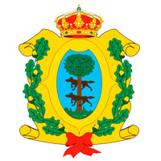

La exploración española comenzó en 1531 con la expedición de Nuño Beltrán de Guzmán. En las siguientes décadas, especialmente bajo el mando de Francisco de Ibarra, se fundaron asentamientos más adentro del territorio y aún más al norte de la ciudad de Zacatecas, cuando fueron descubiertos yacimientos de plata. Ibarra nombró esa nueva área como Nueva Vizcaya en recuerdo de la Provincia de Vizcaya que se ubica al noreste de España. La Nueva Vizcaya incluyó a los actuales estados mexicanos de Chihuahua y Durango, así como ciertas áreas del oriente de Sonora y Sinaloa, y los actuales municipios actuales de Coahuila: Torreón, Viesca, San Pedro, Francisco Madero, Matamoros, Parras, General Cepeda, Arteaga, Ramos Arizpe y Saltillo, en una franja de unos 200 km. de Oeste a Este, partiendo del actual límite estatal entre Coahuila con Zacatecas y Durango, y hacia el Norte de dichos municipios.6 La región cayó bajo la jurisdicción judicial de la Real Audiencia de Guadalajara, así como su administración. En 1552 el capitán Ginés Vázquez de Mercado descubrió uno de los yacimientos de hierro más ricos del mundo. Además de este descubrimiento, la región también era famosa por las riquezas de sus minas. Muestra de esto, son las minas que le pertenecían al Conde del Valle de Súchil. En las siguientes décadas los franciscanos, seguidos de los jesuitas, comenzaron la evangelización de Nueva Vizcaya, asentando los cimientos de una gran diócesis. Las poblaciones Nombre de Dios, Peñol (Peñón Blanco), San Juan Bautista del Río, Analco, Indé, Topia, La Sauceda, Cuencamé y Mezquital surgieron del trabajo evangelizador de la orden franciscana. Mapimi, Santiago Papasquiaro, Tepehuanes, Guanacevi, Santa María del Oro, Tamazula, Cerro Gordo (Villa Ocampo), San Juan de Bocas (Villa Hidalgo) y otros dos núcleos que eran originalmente franciscanos, La Sauceda y Cuencame, fueron fundados por religiosos de la Sociedad de Jesús tras invitación del gobernador Rodrigo del Río de Lossa. Como parte de las Reformas borbónicas, en 1777 las provincia del norte del Virreinato fueron organizadas en la Comandancia General de las Provincias Internas, la cual fue una entidad autónoma del Virreinato en cuestiones militares y administrativas, pero apoyada financieramente por el mismo. Durango se ha distinguido por su fauna en los últimos años ya que se han reencontrado animales declarados extintos como el oso negro mexicano y se han documentado alrededor de 30 individuos de oso gris (grizzly). El lobo mexicano casi desapareció en el estado de Durango durante el siglo XX, grupos de protección a la fauna local lograron reproducir y reintroducir a el lobo mexicano a su hábitat natural en acuerdos con los rancheros y autoridades del estado. El puma, o león de montaña parece frecuentar las sierras de pino-encino Duranguenses. En altos bosques de la Sierra Madre Occidental se encuentra una especie rara de ábeto, llamado abies duranguenses, crece en los municipios colindantes con Sinaloa y Chihuahua. Durango es cuna de diversos músicos destacados como Antonio Alvarado, Joaquín Amparán, Melquiades Campos, Pedro Michaca y Silvestre Revueltas del cual lleva el nombre en el mes de octubre en el Festival Cultural Revueltas como homenaje a la gran familia de artistas Revueltas, el cual se realiza desde 1998.11 Uno de los espectáculos más apreciados por los habitantes de Durango es "Kicham", presentado por la Compañía Korían y dirigido por la profesora Elia María Morelos Favela, que integra a más de 100 actores en escena y presenta su temporada de estreno cada año en el mes de junio, siempre con temas diferentes, pero todos sobre cultura durangueña.
